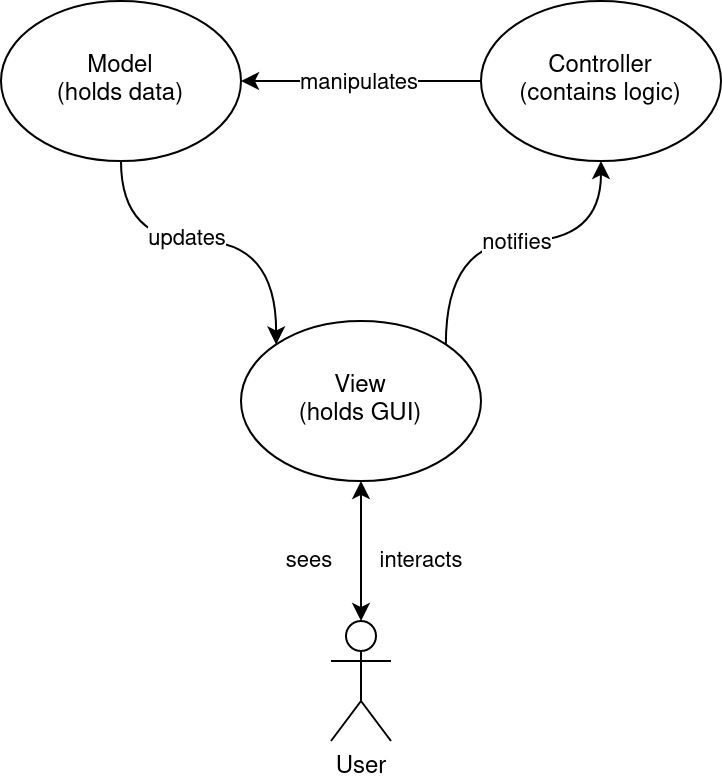

Software Structure#
Contents:
Introduction#
To allow for easy modification and expansion of the NQRduck software, the architecture was designed accordingly.
Functionality is implemented in different modules that can be developed independently of each other. This allows for an independent implementation of the different functionality and makes it less likely for bugs to be introduced into the core application. The modular approach also allows for easy implementation of new modules without in-depth knowledge of the core program or other modules.
Individual features of the software can be installed as separate Python packages, like spectrometer control, pulse sequence programming or simulation of magnetic resonance experiments. The available functionality of the NQRduck program therefore depends on the installed packages.
Model-View-Controller Architecture#
The Model-View-Controller (MVC) architecture is a widely established programming pattern for user interfaces. In the MVC architecture the application data is represented in a Model object, the Graphical User Interface (GUI) in a View object and the user input is processed by the Controller object [1].
 |
|---|
Figure: Principle behind the MVC architecture. Figure adapted from [3]. |
For the NQRduck a hierarchical MVC architecture was chosen. More information can be found in the modules section.